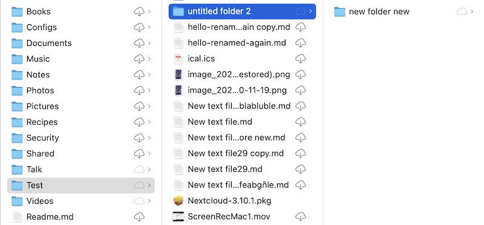
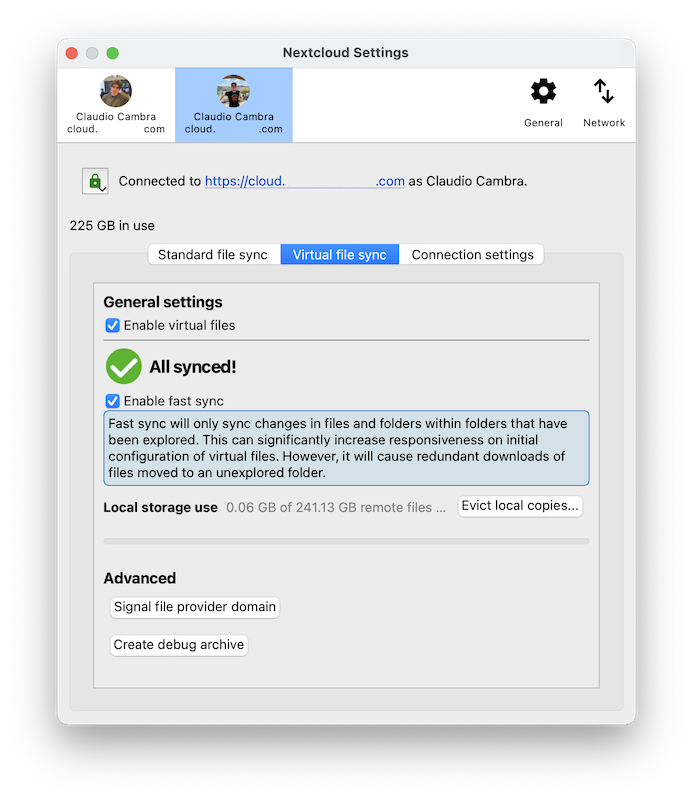

macOS Virtual Files client
Virtual file-based synchronisation for Nextcloud desktop users is now available on macOS.
Unlike on Windows, virtual files support on macOS is provided by a separate client version. This allows us to maintain the best possible experience for classically-synced files, including sync status integration and context menu actions, for users who want to keep using this sync method. Just like our classic sync client, the macOS virtual files client is released alongside the desktop client for Windows and Linux, and will benefit from regular bug-fix and feature updates that improve the user experience.
Supported features
Per-file local retention and eviction
Intelligent local copy eviction
Integration with Spotlight
File previews within Finder for virtual files
Support for Apple-specific formats such as app bundles and iWork (Pages, Numbers, Keynote) bundles
Remote file locking compatibility
“Edit locally” support
File sharing with other users
Automatic synchronisation of remote changes
More!
Notă
To improve remote change detection, we recommend enabling the
notify_push app on your Nextcloud server. This app will notify
the desktop client of changes on the server as soon as they happen,
reducing the time it takes for the client to detect changes. This
will also eliminate the need for the desktop client to continuously
poll the server for changes.
Installation and initial setup
The virtual files client is distributed as an installer package that resembles the macOS classic sync client. The desktop client can be installed by following the steps presented by the installer.
The virtual files desktop client is interchangeable with the classic sync desktop client. This means your existing accounts and settings will carry over to this client and vice-versa, should you ever decide to go back to the classic sync client. This includes any pre-existing standard sync folders, as the virtual files client also supports classic sync.
Notă
Due to technical limitations in macOS we are unable to provide integration in Finder for both classic sync folders and virtual file sync folders. Classic sync folders in the virtual files client will therefore not have Finder integrations such as sync state icons or context menu actions.
Any existing or newly-configured accounts will have virtual files automatically enabled. On macOS, each account’s virtual files live under their own domain, separate from any pre-existing classic sync folders. These domains can be found listed under the “Locations” group in the Finder sidebar.

Upon first accessing one of these domains, the desktop client will being to request information on remote files from the server. This first synchronisation may take some time depending on the quantity of files hosted on the server.
Finder integration
The virtual files client has distinct Finder integrations that allow it to more deeply and more natively integrate with the macOS file browser than the classic sync client.
Sync status indicators
Similarly to classic sync client, the virtual files client displays icons next to virtual files that indicate what their status is.
Cloud with arrow: item or its children is virtual and is available for local keeping
Cloud outline: item is partially available locally
No icon: item is available offline
Context menu actions
Control-clicking, two-finger clicking, or right-clicking on a Finder item will provide the context menu, in which you may find several entries provided by the virtual files client that allow you to use some of the features supported by Nextcloud. These include:
File locking (if supported by server)
File sharing (if supported by server)

Configuration
Virtual files-related settings can be adjusted on a per-account basis via the Nextcloud desktop client’s settings window.
The virtual files section offers a number of options relevant to virtual files interaction:
Enable/disable virtual files for the target account
Enable/disable fast sync
Manage local storage usage and evict local copies
Force the virtual files domain to check for updates